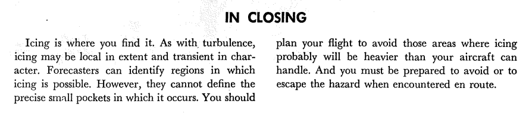

"Aircraft icing is one of the major weather hazards to aviation. Icing is a cumulative hazard. It reduces aircraft efficiency by increasing weight, reducing lift, decreasing thrust, and increasing drag." 1
Summary
Prior information from the FAA on "Aviation Weather For Pilots and Flight Operations Personnel".
Discussion
Veteran pilots with FIKI ratings (Flight In Known Icing) may already be familiar with this, but the rest of us could benefit from reading it.
Alas, this was cancelled in 2016 (the next version calcelled in 2022 2, and the superseding version 3 is more current, but not as entertaining a read). It also features "instructive illustrations" to introduce each chapter, which are somewhere on the corney-questionable-objectionable spectrum.
The potential hazards of structural icing are noted:

I am not so sure about the "Stalling Speed Increases" part. The speed at which the airplane may stall at may decrease due to the effects of ice (potentially lower lift at a given airspeed and angle of attack), and a higher airspeed may be required in icing to avoid stall is the way that I would explain it.
The potential hazards of pitot probe (important for airspeed indication) icing are noted
(so THAT is what the inside of a pitot looks like):


Closing text reproduced to be searchable:
In Closing
Icing is where you find it. As with turbulence, icing may be local in extent and transient in character. Forecasters can identify regions in which icing is possible. However, they cannot define the precise small pockets in which it occurs. You should plan your flight to avoid those areas where icing probably will be heavier than your aircraft can handle. And you must be prepared to avoid or to escape the hazard when encountered en route.